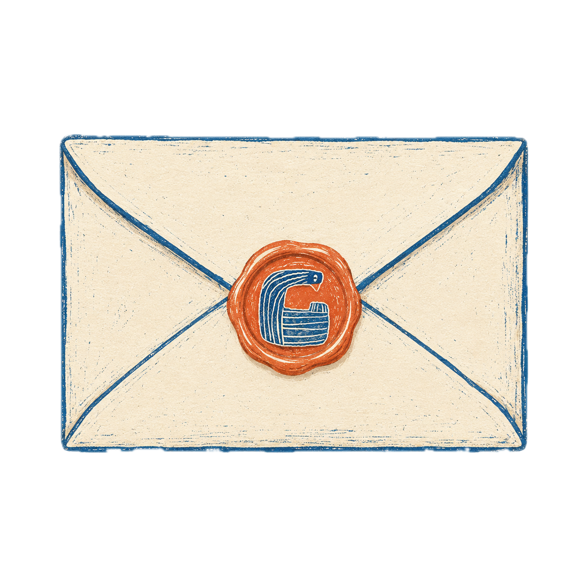

畢業論文的選題和瑤族相關，至於為什麼在眾多舞蹈素材中選擇瑤族，我想是瑤族在我的大學生活里出現的頻率非常高，第一次跟學院下鄉采風的地點是瑤族自治鄉，第二次下鄉主題變了以為不會接觸瑤族結果有幸在當地鄉慶上演繹穿堂舞，廣西民間課程開設了花棍腰鼓，甚至教育實習期間磨練的精品課程還是瑤族舞曲，就這樣重復出現的瑤族元素便自然而然成了敲定的選題。就好像我21年第一次來到桂林旅行，反復乘坐k96前往融創路過雁中路1號，就沒想到能在這上四年大學。
其實說來非常慚愧，大學四年期間一直在到處亂跑，北京上海杭州天津，南京濟南衡陽香港。主流文化對物質學歷的焦慮以及對美的忽視時常讓我感到焦慮，彷彿在睡覺前沒有完成清單上的某一項就是蹉跎了時光。幸好我還能出逃，跑到空曠的山野，無親的人流，到另一個空間換一種呼吸方式，如鳥翱翔，從禁錮的身心飛出去，飛夠了再飛回來。我喜歡航班即將起飛的時刻，身邊的人說各式各樣的語言，來往穿梭到世界各地，我也要把小小的自己送到一個從未踏足的角落，初升的太陽一點點光亮起來，我感覺到一種無限膨脹的自由。
关注我的小红薯：https://xhslink.com/m/i1Fke9gxnL。